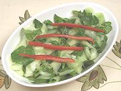

|
Cucumber Watercress SaladEuro/American | ||||
| Serves: Effort: Sched: DoAhead: |
4 salad * 15 min Most |
An elegant, stand-out salad, tart and delicious. This recipe makes 2 large salads or 4 small salads. Option - instead of using them for garnish you could shred some red bell pepper and mix it in. | |||
|
|
1 4 ----- 3 2 1/3 1/4 ----- |
# oz --- T T t t --- |
Cucumbers (1) Watercress -- Dresssing Olive Oil ExtV. Lime Juice Salt Pepper --- Garnish Red Bell Pepper |
Make - (15 min)
|